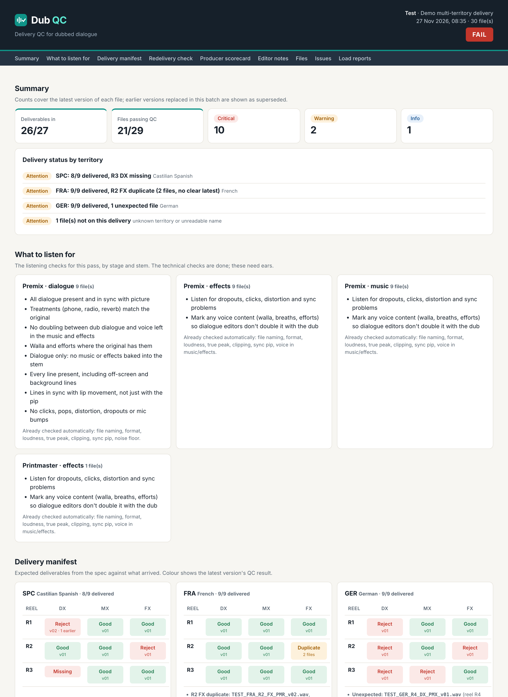
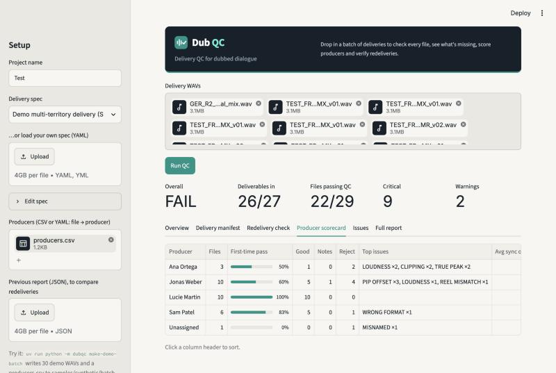

Technical checks on every file
Naming, format, loudness, true peak, clipping, sync pip and noise, each flagged with a timecode, a severity and a suggested fix.
Dub QC runs the technical checks on audio at every stage, from raw dialogue to final deliverables. It works alongside the people listening, showing them exactly where to listen and keeping their notes on the right timecodes.

A dubbed film is checked again and again before it ships: every territory's dialogue, through premix, printmaster and final QC, then into every version of the release. Dozens of files, and every pass relies on someone hearing everything. Things slip through.
Every file gets a rating, a timecoded issue list and a load report. Across a whole delivery it tracks what's missing, what got fixed and who needs support, with every report time-stamped and every file linked to the producer responsible for fixing it.
Naming, format, loudness, true peak, clipping, sync pip and noise, each flagged with a timecode, a severity and a suggested fix.
What should arrive against what did: "SPC: 8/9 delivered, R3 DX missing."
When v02 arrives, every v01 issue is marked fixed or still present, and anything new is flagged.
First-time pass rate, top issues and a coaching note: "3 of 5 rejects are sync pip."
Timecoded notes carried through every pass, flagged if the noted line goes quiet.
A detector listens for the syllable-rate rhythm of speech and marks likely walla, breaths and efforts, so dialogue editors don't double them with the dub.
The listening checks for each stage and stem, next to what's already been checked automatically.
A batch of WAVs, plus a delivery spec. Optionally a producers list, editor notes and an earlier report.
Against its stage, its stem and its delivery version. Theatrical and R128 limits from the same spec.
An HTML report, JSON for the next redelivery check, and a marker list to drop into the session.
# generate a 30-file demo batch, then check it
uv run python -m dubqc make-demo-batch
uv run python -m dubqc check samples/synthetic/batch/*.wav \
--spec samples/demo_batch/spec.yaml \
--producers samples/synthetic/batch/producers.csv \
--notes samples/synthetic/batch/editor_notes.csv
Delivery manifest
SPC: 8/9 delivered, R3 DX missing
FRA: 9/9 delivered, R2 FX duplicate
GER: 9/9 delivered, 1 unexpected file
Editor notes: 7 of 8 noted spots have audio
SILENT 03:00:14:12 GER R3 DX: off-screen line
Redelivery check
SPC R1 DX v01 → v02: Still failing
(1 fixed, 3 still present, 1 new)
Producer scorecard
Jonas Weber first-time pass 50% 5 reject
| 3 of 5 rejects are sync pip,
| so sync training needed.Open source, runs locally, all demo data synthetic.